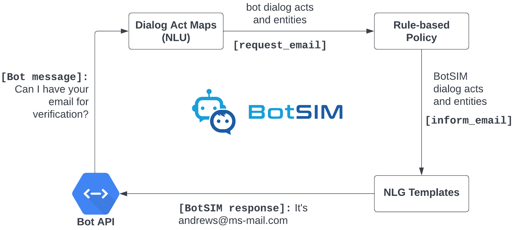

What is BotSIM?
BotSIM is an open-source Bot SIMulation toolkit for large-scale data-efficient end-to-end evaluation, diagnosis and remediation of commercial task-oriented dialog systems (chatbots) across muliple bot platforms. As a simulation framework, BotSIM can be extended by bot developers to support new bot platforms. As a toolkit, it can be readily applied by bot admins or practitioners to their bots.
Key features of BotSIM include:
Multi-stage bot evaluation: BotSIM can be used for both pre-deployment testing and potentially post-deployment performance monitoring.
Data-efficient dialogue generation: Equipped with a deep network based paraphrasing model, BotSIM can generate an extensive set of test intent queries from the limited number of input intent utterances, which can be used to evaluate the bot intent model at scale.
End-to-end bot evaluation via dialogue simulation: Through automatic chatbot simulation, BotSIM can identify existing issues of the bot and evaluate both the natural language understanding (NLU) performance (for instance, intent or NER error rates) and the end-to-end dialogue performance such as goal completion rates.
Bot health report dashboard: The bot health report dashboard presents a multi-granularity top-down view of bot performance consisting of historical performance, current bot test performance and dialogue-specific performance. Together with the analytical tools, they help bot practitioners quickly identify the most urgent issues and properly plan their resources for troubleshooting.
Easy extension to new bot platform: BotSIM was built with a modular task-agnostic design, with multiple platform support in mind, so it can be easily extended to support new bot platforms. (*BotSIM currently supports Salesforce Einstein BotBuilder and Google DialogFlow CX.)
BotSIM can significantly accelerate commercial bot development and evaluation, reduce cost and time-to-market by: 1) reducing manual efforts for test dialog creation and human-bot conversation; 2) reducing fast bot evaluation and diagnosis via large-scale end-to-end dialog simulation; 3) improving bot troubleshooting process with actionable suggestions from simulation results analysis.
BotSIM Pipeline

BotSIM offers a streamlined “generation-simulation-remediation” process (shown above) for end-to-end bot evaluation and remediation. Each stage in the pipeline is supported by a system component as listed below:
Generator takes raw bot designs metadata or APIs and intent utterances as input and produces the following outputs: 1) templates for NLU and NLG; 2) simulation goals for the Simulator.
Simulator performs agenda-based dialog simulation through bot APIs as depiected in the figure below.
Remediator generates health reports, performs analyses, and provides actionable suggestions to troubleshoot and improve dialog systems.
{kind=link}
Getting Started
Prerequisite
To use BotSIM, users need to have API access to the supported bot platforms:
Salesforce EinsteinBotBuilder LiveAgent API:
org ID,button ID,deployment Id,chat endpointGoogle DialogFlow CX API:
location ID,project ID,agent IDand JSON API token.
Installation
(Optional) Creating conda environment
conda create -n botsim python=3.9 conda activate botsim
Cloning and building dependencies
git clone https://github.com/salesforce/botsim.git cd botsim pip install .
Running Streamlit App
{kind=link}
Start Streamlit App locally （detailed instructions regarding App usage given in the tutorial.)
export PYTHONPATH=./:$PYTHONPATH
export DATABASE_URL="db/botsim_sqlite_demo.db"
streamlit run botsim/streamlit_app/app.py
Optionally, the app can also be deployed as a docker container
device=cpu # change device to gpu to build a GPU docker image
docker build --build-arg device=$device -t botsim-streamlit .
The App can also be deployed to GCP for access to GPU resources. Detailed deployment instructions are given in the GCP Deployment section of the documentation.
Command Line Tools
Alternatively, users can also deep-dive to learn more about BotSIM’s system components through the command line tools. Detailed steps are given in the tutorial section.